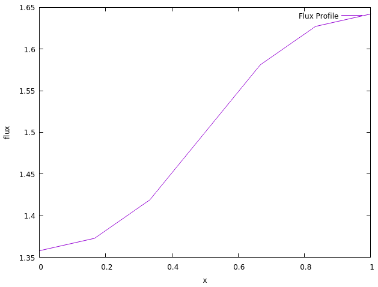
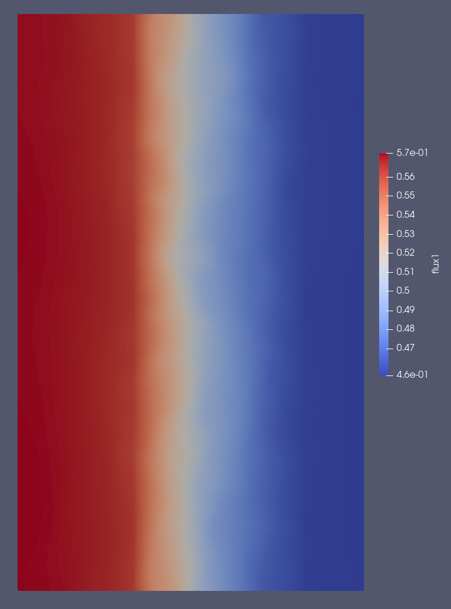

ReCoDE - Neutron Diffusion Model
Description
This code is part of the Research Computing and Data Science Examples (ReCoDE) project. The code itself is a 1-dimensional neutron diffusion solver written in Fortran in an object-oriented format. The example will focus on features of the code that can be used as a teaching aid to give readers some experience with the concepts such that they can implement them in the exercises or directly in their own codes. An understanding of neutron diffusion and reactor physics is not required for this example, but a discussion of the theory can be found in the bottom section of this readme.
Learning Outcomes
- Compiled Codes and Makefiles
- Compiler Directives
- Object-Oriented Programming
- Reading input data from file
- Generating output files
- Using ParaView to visualise numerical results
- Solving mathematical problems
- Discretisation of a spatial dimension
- Optimised data storage
- Incorporating external libraries (PETSc)
Requirements
Academic
Entry level researcher with basic knowledge of Fortran syntax. For a Fortran crash course see here
System
| Program | Version |
|---|---|
gfortran |
>=9.0.0 |
gcc |
>=9.0.0 |
GNU make |
>=4.2.0 |
Anaconda |
>=4.13.0 |
Getting Started
Compiling the Code
As Fortran is a compiled language, the code must first be compiled before it can be executed. To do so, navigate to the src directory within the code and enter the commands:
make clean
make
The make clean command first leans the directory of any module files or executables created by any past makes. This should generally be done before you compile the code with a new make option. The make command will execute the makefile contained within the same directory, converting the Fortran code to an optimised form that can be read by your computer. This then generates an executable named diffusion. Once this has been done, the code can be executed from the parent directory using the command:
./diffusion
This command tells the executable to run and will generate relevant output files containing the solution to the problem.
Changing Input Options
The code is designed such that the user can easily change the problem which the code is attempting to solve. The code uses the input file Input.txt to read details about the problem, such as the positions of boundaries or materials in the problem. An example of such an input can be seen below:
------------------------------------------
Regions: - Integer number of regions in the problem
2
------------------------------------------
Boundaries: - Real number positions of the boundaries between the regions (one per line)
0.0
0.5
1.0
------------------------------------------
Nodes: - Integer number of nodes in each region (one per line)
5
5
------------------------------------------
Materials: - Fuel, Water or Steel (one per line)
Fuel
Fuel
------------------------------------------
Boundary_Conditions: - Zero or Reflective (two parameters - one per line)
Zero
Zero
------------------------------------------
For this example problem, we are stating that we have a geometry ranging from x = 0.0 to 1.0, half fuel and half steel with a central boundary at x = 0.5. As seen from the above input, the code needs four different parameters to be described to it.
- Regions - An integer number of regions that exists within the problem. We have 1 region from 0.0 to 0.5 and another from 0.5 to 1.0, hence we give the code the integer number 2.
- Boundaries - The positions of the boundaries within the problem. Our first boundary is at the start of our geometry, so we enter the number 0.0. We then have an internal boundary halfway through the problem separating the regions, so we enter the number 0.5. Finally, we have the exterior boundary of our geometry, so we enter the number 1.0. The code will always read one more value here than the number of regions in the problem.
- Nodes - This describes how refined we want the geometry in each region. For the example we want a quick solve with just enough nodes to see the flux profile. As we need to describe this for each region we enter the value 10 twice. The code will always read the same number of values here as the number of regions in the problem.
- Materials - This described the materials that are present within the system. The first half of our geometry is fuel, with the latter half being Steel, so we enter Fuel and Steel. The code will always read the same number of values here as the number of regions in the problem.
- Boundary Conditions - This tells the code what boundaries exist at the edges of our problem. Two boundary conditions have been implemented in out code, that of 'Zero' and 'Reflective'. The former simply ensures that the flux will tend to zero at the boundary, while the latter ensures that the derivative of the flux will tend to zero at the boundary.
Reading Output Files
The code generates two output files, Output.txt and Output.vtu. The former is a simple text file containing the position and flux of the solution to the problem. These are simply given in two columns such that they can be read easily by something like a GNUPlot or Python script. An example of such a flux profile can be seen below:
0.000000E+00 0.135813E+01
0.166667E+00 0.137306E+01
0.333333E+00 0.141907E+01
0.500000E+00 0.150000E+01
0.666667E+00 0.158093E+01
0.833333E+00 0.162694E+01
0.100000E+01 0.164187E+01
This can then be plotted using tools such as GNUPlot to produce the profile seen below:

GNUPlot was chosen here as the application is very simple and the program itself is very easy to install. On Linux, you only need the commands:
sudo apt update
sudo apt install gnuplot
For installation on Windows, you will need to download the software from http://www.gnuplot.info/download.html. The GNUPlot script used to generate the plot is named fluxplot and can be found in the home directory of the project. This can be run with the command:
gnuplot -p fluxplot
The Output.vtu file stores additional data such as the region and cell numbers in an XML format. This can be directly read by software such as ParaView, allowing for more detailed visualisations than that of the previous flux profile. For visualisation purposes, the data has been smeared in a second dimension, which should give users an idea of how multidimensional cell data can be viewed. An example output from ParaView can be seen in the image below:

Instructions on how to install ParaView can be found at: https://www.ParaView.org/Wiki/ParaView:Build_And_Install
A user guide for ParaView can be found at: https://docs.ParaView.org/en/latest/
Project Structure
.
├── docs
│ └── images
├── solutions
│ ├── 1a
│ │ └── src
│ │ ├── centralproc
│ │ ├── inoutproc
│ │ ├── PETSc
│ │ └── stdlib
│ ├── ...
│ ├── 3b
│ │ └── src
│ │ ├── centralproc
│ │ ├── inoutproc
│ │ ├── PETSc
│ │ └── stdlib
└── src
├── centralproc
├── inoutproc
├── PETSc
└── stdlib